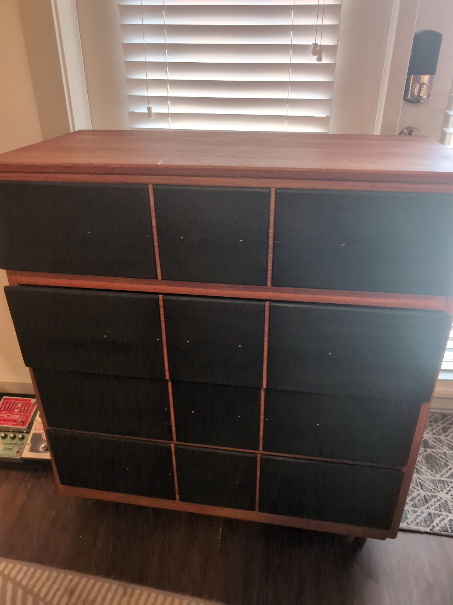

Full refinishing of a tall Art Deco revival dresser. The original plan was a two-tone
black-and-warm-wood treatment, but the first attempt was simplified to one stain color
in the hope of finishing the piece quickly. The dresser rejected the easier route.
The project is being completed in an apartment, with sanding and finishing split between
a small patio and the middle of the living room. Moving and staging the large carcass and
drawers has been a major part of the work.
The final design returned to the original concept: warm reddish-brown framing, blackened
oak drawer fields with visible grain, and bright-gold metal hardware.
The Warm Cherry color proved excellent on the oak. The problem was not the color choice;
it was inconsistent absorption caused by a nearly invisible original finish and surface
contamination.
02 First Stain Attempt — What Went Wrong
Original finish remnants identified
The original clear finish was extremely close in color to the pale natural oak. Even a
mineral-spirits inspection did not reveal every surviving patch. Warm Cherry stain exposed
the missed areas immediately because they resisted absorption.
Drawer-face splotches removed
Two drawer faces developed sharply defined dark marks after staining. The pattern and the
apartment workflow pointed to sweat or hand-contact contamination on freshly sanded wood.
The affected drawer faces dried too quickly to redistribute the stain. Rather than trying
to bury the marks under additional penetrating stain, the drawer fields were sanded back
uniformly and the original black-face design was reinstated.
Penetrating stain amplified every difference in absorption. A second color coat would not
have reliably hidden the defects; uniform bare wood was the only predictable reset.
03 Final Finish Schedule
Selected materials and placement
Area
Product / color
Status
Carcass, top and framing
General Finishes Oil Based Wood Stain — Warm Cherry
Stained
Drawer-face fields
General Finishes Oil Based Wood Stain — Black, two coats
Stained
Routed divider grooves
Warm Cherry, restored by artist's brush after cleanup
Restained
All stained wood
General Finishes Arm-R-Seal Satin, three thin coats
Pending
Wood portions of pulls
Warm Cherry
Stained
Metal portions of pulls
Bright gold spray finish
Pending
General Finishes Hard Wax Oil was originally planned as the topcoat, but it is intended for
raw wood rather than as a clear film over this stain system. Arm-R-Seal Satin was selected
instead for compatibility, durability and easier application across the dresser's large
vertical surfaces.
04 Drawer-Face Repair
Black fields complete
All drawer-face fields were taken back to uniformly bare wood so the black stain would match
across the full dresser rather than only correcting the two visibly damaged faces.
Two coats of General Finishes Black oil stain produced a deep blackened-oak appearance while
preserving the grain. The second coat substantially improved both depth and uniformity.
Groove bleed complete
Low-quality painter's tape allowed black stain to wick into portions of the Warm Cherry
grooves.
A new narrow chisel was used as a pull scraper rather than pushed as a paring chisel. Light,
controlled scraping removed the black-stained surface fibers without deepening the grooves.
The cleaned grooves were restained Warm Cherry with an artist's brush. The repaired lines now
read as deliberate geometric framing rather than a patched mistake.
05 Current Preview

Stain complete; photographed before Arm-R-Seal and hardware installationJuly 31, 2026
The black remains visibly wood rather than reading as opaque paint. The satin topcoat should
deepen both colors, unify the sheen and give the drawer fields a richer black without erasing
the oak grain.
06 Remaining Work
Allow the freshly restained grooves to dry completely
Apply Arm-R-Seal Satin coat 1
Lightly smooth dust nibs as needed, then apply Arm-R-Seal coat 2
Apply Arm-R-Seal coat 3; do not sand the final coat
Scuff, mask and spray the metal pull components bright gold
Allow the finish to harden before tightening hardware and returning the dresser to use
Move the completed dresser out of the living room and formally end the hostage situation